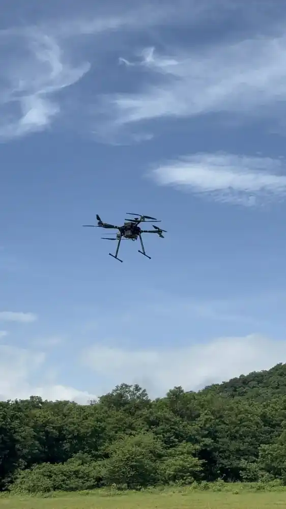

Home / Problems We Solve / Finding missing people
Public safetySearch and rescue drones for finding missing people faster
Forests, hills and flooded land are slow to search on foot, and time matters.
How do drones help search and rescue?
When someone is missing in difficult terrain, ground teams can only cover so much. A drone gives them a view from above and helps decide where to go first.
A drone can quickly look over ground that would take a team much longer to cross. A thermal camera can make a person stand out from a cooler background.
Thermal has limits: dense canopy can block the view, and warm ground reduces contrast. A drone works best as a way to direct ground teams, not replace them.
Signs you have this problem
- Search areas are too large for available teams
- Terrain makes ground access slow or unsafe
- Teams lack a shared picture of what has been searched
- Night searches are limited by visibility
What to look for
- Thermal and visual cameras
- Enough flight time for your search pattern
- A live map shared with command
- Communications that work without mobile coverage
The main causes
Terrain
Forest, hills and water slow down ground teams.
Visibility
People can be hard to see, especially in poor light.
Time
The search area grows the longer it takes.
Before and after
How to solve it, step by step
- 1
Define
Mark the search area and priority zones.
- 2
Fly
Search with thermal and visual cameras.
- 3
Share
Send findings to the live map.
- 4
Reach
Direct ground teams to the location.
Common questions
Can thermal drones see through trees?
Not reliably. Thermal cameras cannot see through dense canopy, though gaps can reveal heat sources. Plan ground searches alongside them.
Can drones search at night?
A thermal camera works in darkness. Check current DGCA rules for night operations.
Does a drone replace rescue teams?
No. It helps them decide where to go, and they carry out the rescue.
Related problems
Blind in the first hours of a disaster
After a flood, earthquake or wildfire, roads and networks may be gone and nobody knows the full picture.
Read moreNo network in the field
Remote terrain, border areas and disaster zones often have no coverage at all.
Read moreGPS jamming and spoofing
Satellite signals are easy to jam, spoof or block, and a drone that depends on them can drift or be lost.
Read moreFacing this problem?
Tell us about your mission and our engineers will suggest the right platform or configuration.